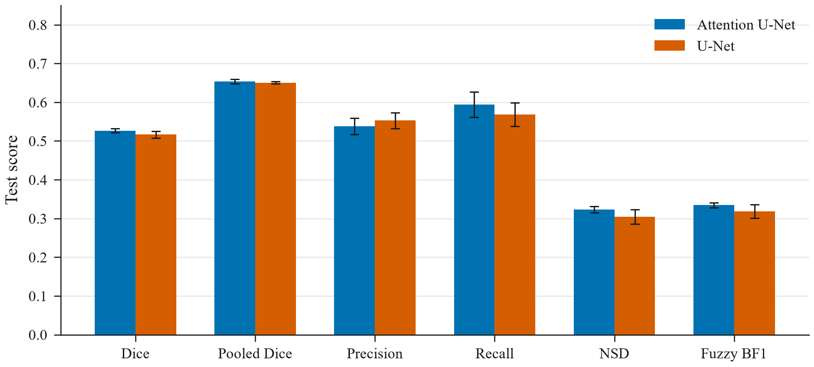
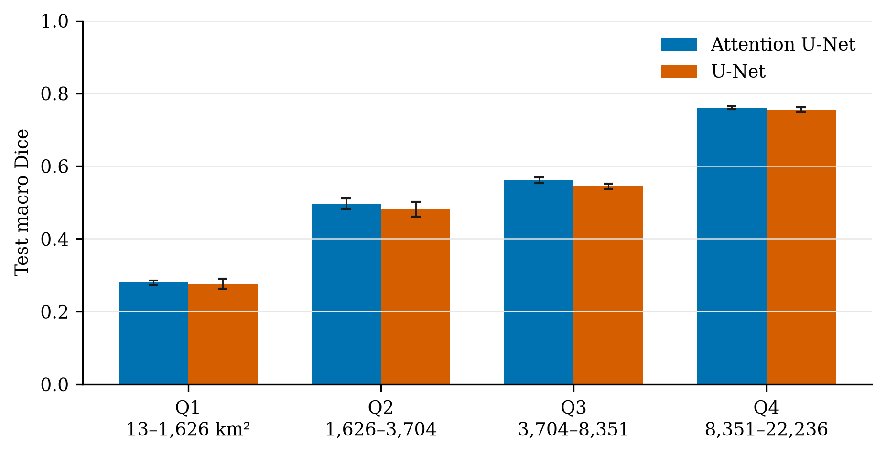
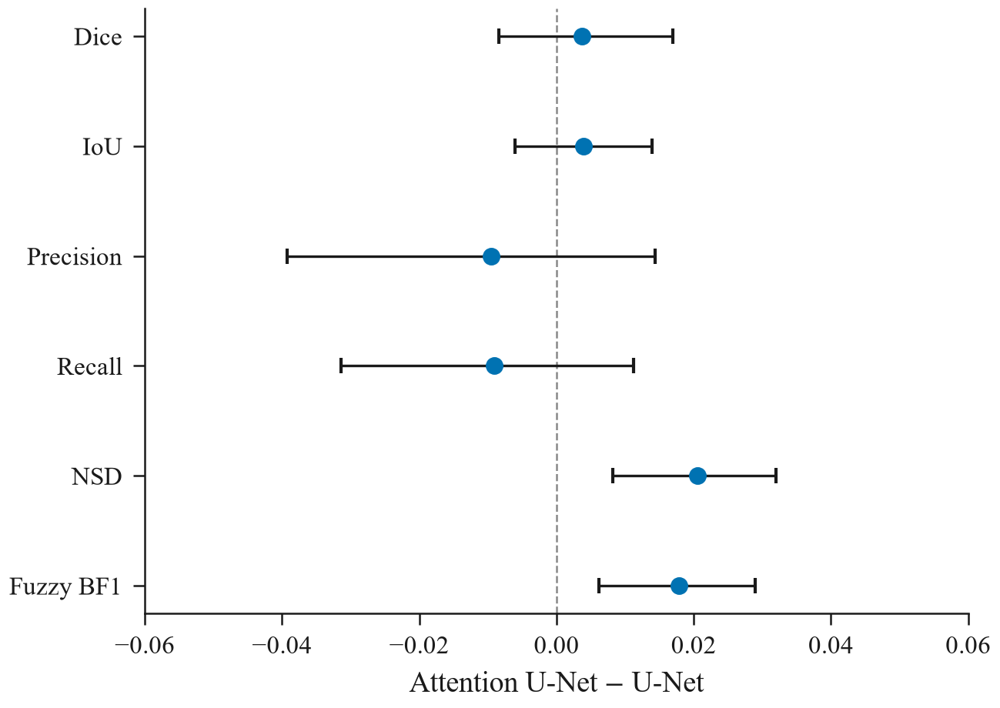
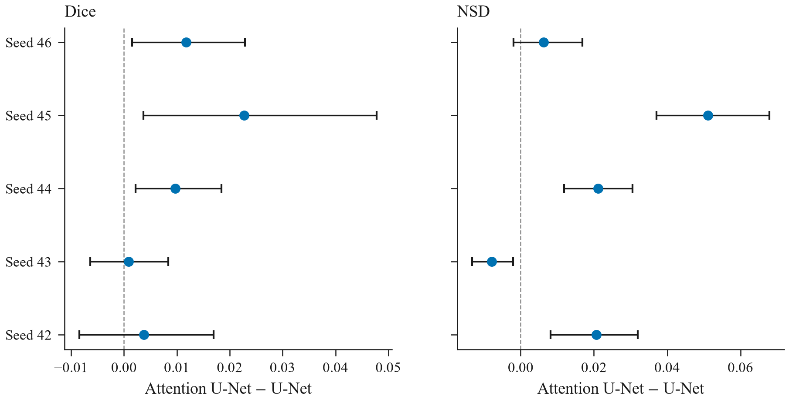
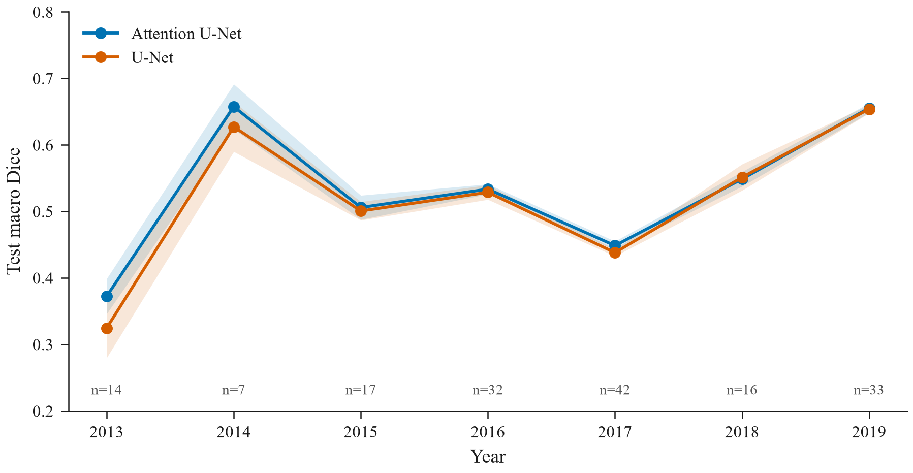
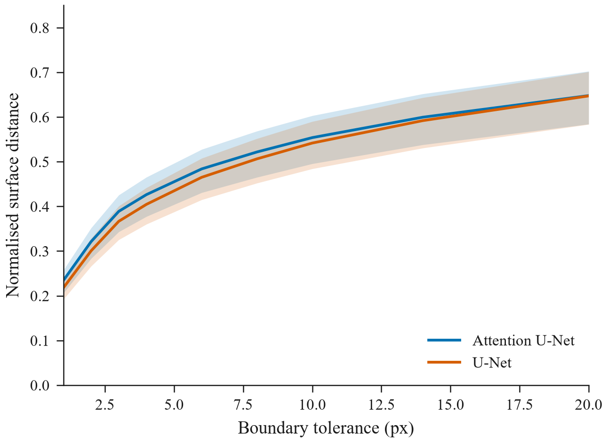
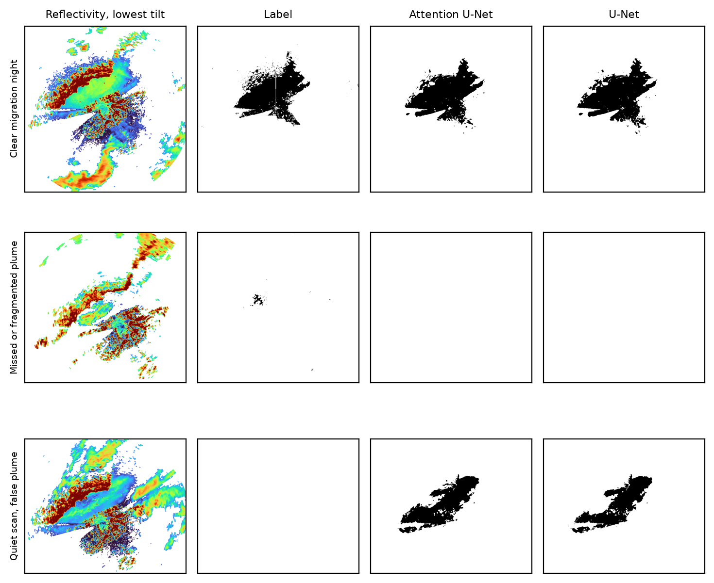
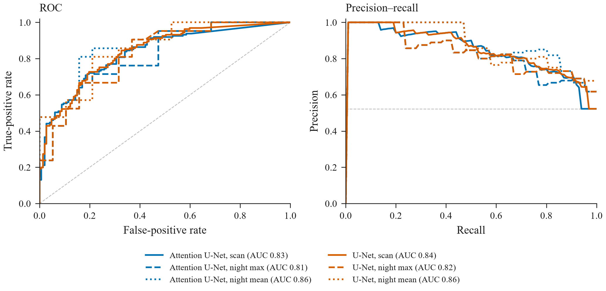

Results and discussion
Segmentation of spruce-budworm dispersal in single-polarisation weather radar, on a night-disjoint test set.
2. Data and experimental design
The radar is the XAM C-band installation at Val-d’Irène. Each scan is a 960 × 960 plan-position image at 500 m pixel spacing. The network sees nine elevations of reflectivity together with a mask of gates where the lowest tilt is finite. The target is the cleaned dispersal product, retained where reflectivity is at least 0 dBZ. A scan is a migration scan when that mask is non-empty and a quiet scan otherwise. Nights are operational nights bounded at UTC noon. Whole nights are assigned to train, validation or test, so no night contributes scans to more than one split. The frozen manifest has 3,078 scans and 267 nights: 1,108 / 1,050 positive and negative scans in training, 310 / 302 in validation, and 161 / 147 in the test set. Negatives were sampled to a ratio of one quiet scan per migration scan, so precision and average precision describe this cohort and not the raw archive.
The segmenters are a U-Net (Ronneberger et al., 2015) and the same U-Net with attention gates on the skip connections (Oktay et al., 2018). Both use 32 base filters, a focal-Tversky loss (α = 0.3, β = 0.7, γ = 1.333), AdamW, and 100 epochs with patience 50. Five initialisation seeds, 42 through 46, were trained for each architecture. The decision threshold was chosen on validation Dice and came out at 0.15 for every run. Test scenes were not read until that choice, and the seed list, had been written down. Reported intervals are night-clustered percentile intervals from 2,000 resamples.
A Swin-Tiny classifier (Liu et al., 2021), 384 px input, was trained on the same split to score scan presence. Seeds 43–46 are evaluated here on the test set at the threshold each seed selected on validation. The seed-42 classifier weights are not in the checkpoint store, so that one seed is omitted rather than replaced. A cascade blanks the segmentation wherever the classifier score falls below its validation threshold. Two thresholds are reported: Youden’s J, and the highest-specificity cutoff that keeps validation scan sensitivity at or above 0.98.
3. Results
3.1 Comparative segmentation skill
Table 1 and Figure 1 give the test set. Macro Dice on the 161 positive scans is 0.526 ± 0.005 for the Attention U-Net and 0.517 ± 0.009 for the U-Net. Pooled Dice on the same pixels is 0.654 ± 0.006 and 0.651 ± 0.003. The Attention U-Net has higher recall (0.594 ± 0.033 against 0.569 ± 0.030) and higher boundary scores. The U-Net has higher precision (0.553 ± 0.020 against 0.538 ± 0.021). The gaps are smaller than the spread among U-Net seeds and much smaller than the range across years.

Table 1. Test set, positive scans. Mean ± standard deviation, five seeds.
| Model | Dice | Pooled Dice | Precision | Recall | NSD | Fuzzy BF1 |
|---|---|---|---|---|---|---|
| Attention U-Net | 0.526 ± 0.005 | 0.654 ± 0.006 | 0.538 ± 0.021 | 0.594 ± 0.033 | 0.323 ± 0.008 | 0.334 ± 0.006 |
| U-Net | 0.517 ± 0.009 | 0.651 ± 0.003 | 0.553 ± 0.020 | 0.569 ± 0.030 | 0.305 ± 0.019 | 0.318 ± 0.017 |
Radar verification usually reports probability of detection, false-alarm ratio and critical success index on the pooled pixels, not only a per-scene overlap (Guo et al., 2023; Zhang et al., 2024). On the positive test scans those scores are POD 0.731 ± 0.028, FAR 0.408 ± 0.027 and CSI 0.485 ± 0.007 for the Attention U-Net, and 0.712 ± 0.029, 0.400 ± 0.020 and 0.482 ± 0.003 for the U-Net. CSI, which penalises both misses and false pixels, barely separates the two models. The Attention U-Net detects more of the labelled plume and also raises the false-alarm ratio.
The same scores hide a strong dependence on plume size (Figure 2). Quartiles of labelled area on the test set run from about 13–1,626 km² up to 8,351–22,236 km², with about 40 scans in each. Macro Dice rises from 0.280 ± 0.006 to 0.761 ± 0.004 for the Attention U-Net, and from 0.277 ± 0.014 to 0.756 ± 0.006 for the U-Net. The architecture gap inside a quartile is at most 0.016. The smallest quartile is where both models fail, which is the case in the middle row of Figure 7.

3.2 Ablation of the attention gates
Because the two networks differ only by the gates, the paired contrast is an ablation of that module. On the pre-specified seed the gates change Dice by +0.0037, with a night-clustered interval of −0.0084 to +0.0170 (Figure 3). IoU, precision and recall also include zero. NSD changes by +0.0206 (0.0082 to 0.0319) and fuzzy boundary F1 by +0.0179 (0.0062 to 0.0290). Across the five seeds (Figure 4, Table 2) Dice stays positive, and its interval excludes zero for three seeds, not including seed 42. NSD changes sign: at seed 43 the difference is −0.0079 and the interval excludes zero in the plain U-Net’s favour.


Table 2. Attention U-Net minus U-Net. Night-clustered 95% intervals, test positives.
| Seed | Δ Dice | 95% interval | Δ NSD | 95% interval |
|---|---|---|---|---|
| 42 | +0.0037 | −0.0084 to +0.0170 | +0.0206 | +0.0082 to +0.0319 |
| 43 | +0.0009 | −0.0064 to +0.0083 | −0.0079 | −0.0133 to −0.0020 |
| 44 | +0.0097 | +0.0022 to +0.0184 | +0.0212 | +0.0119 to +0.0306 |
| 45 | +0.0227 | +0.0037 to +0.0478 | +0.0512 | +0.0371 to +0.0679 |
| 46 | +0.0118 | +0.0015 to +0.0229 | +0.0062 | −0.0020 to +0.0168 |
3.3 Robustness to year and to boundary tolerance
Figure 5 is not a leave-one-year-out test. Every year appears in training. It asks whether, inside the night-disjoint test set, one decoder is carried by a single season. The two curves move together. Both are weak in 2013 (14 positive scans; Dice 0.37 and 0.33) and stronger in 2014 and 2019. The Attention U-Net leads in six years. In 2018, 16 scans, the U-Net leads by 0.002. The year range is nearly 0.3 Dice. The architecture gap inside a year is a few hundredths.
Figure 6 asks whether the boundary result is an artefact of the 2 px tolerance. For seed 42 the Attention U-Net lies above the U-Net from 1 px to 20 px. The night-clustered bands overlap, so the offset is small relative to night-to-night variation. That is consistent with the sign change in Figure 4.
Validation macro Dice lies between 0.553 and 0.571. Test macro Dice lies between 0.504 and 0.532. The mean drop is 0.041 and 0.042 for the two families. The shift belongs to the split, not to the decoder.


3.4 What the masks look like
Figure 7 shows three test scans at the locked threshold, chosen as the highest mean Dice, the lowest mean Dice, and the quiet scan with the largest predicted area. On the clear plume of 22 July 2017 both decoders recover the body of the label and both add a fringe the label does not contain. On 14 July 2013 the label is a small fragment inside a much larger echo, and both models miss it. On the quiet scan of 10 July 2018 both models paint a coherent false plume in a region of organised reflectivity. The failure modes are shared. The gates do not create a different kind of error.

3.5 Detection and the cascade
Reading presence from segmented area, seed 42 has a test ROC area of 0.83 (Attention U-Net) and 0.84 (U-Net) at scan level, 0.81 and 0.82 when a night is scored by its maximum area, and 0.86 for both when a night is scored by its mean area (Figure 8). Average precision ranks the three definitions the same way. The horizontal line is the prevalence of positive scans in the balanced cohort, not the operational prevalence.
The Swin-Tiny classifiers, seeds 43–46, reach test ROC areas of 0.918, 0.906, 0.885 and 0.918, and average precisions of 0.927, 0.923, 0.865 and 0.920 (Table 3). Validation areas for the same four seeds are 0.948, 0.927, 0.919 and 0.932, matching the values stored at training, so the test scores are not a different calibration. The drop from validation to test is about 0.02 to 0.03 in ROC area. Seed 42 of the classifier could not be scored: its weights are absent.
Table 3. Swin-Tiny scan classifier. Thresholds were fixed on validation.
| Seed | Val ROC | Test ROC | Test AP | Youden threshold |
|---|---|---|---|---|
| 43 | 0.948 | 0.918 | 0.927 | 0.10 |
| 44 | 0.927 | 0.906 | 0.923 | 0.05 |
| 45 | 0.919 | 0.885 | 0.865 | 0.55 |
| 46 | 0.932 | 0.918 | 0.920 | 0.15 |
Gating the seed-42 segmenter with these classifiers does not reproduce a perfect presence oracle. At the Youden threshold the gate rejects 36 to 57 of the 161 positive test scans and macro Dice falls from 0.518 to between 0.376 and 0.438. At the high-sensitivity threshold (validation sensitivity at least 0.98) the gate rejects 8 to 21 positive scans. Macro Dice falls to between 0.478 and 0.509, and global Dice rises from 0.605 to between 0.622 and 0.635. The same pattern holds for the U-Net. A usable gate buys a few points of integrated overlap by discarding a minority of true plumes. It does not repair the plume that remains, and the Youden operating point discards too many of them.
An oracle that blanks every quiet scan and keeps every migration scan leaves macro Dice unchanged, at 0.5175 and 0.5138, and raises global Dice by 0.051, to 0.656 and 0.647. The best high-sensitivity classifier recovers roughly half of that global-Dice gain and gives back some of the macro Dice the oracle is not allowed to touch.

4. Discussion
4.1 Spatial context is already in both models
On weather-radar echoes, the large gain is usually the step from a pointwise rule to a model that sees spatial structure (Lin et al., 2019; Yang et al., 2026). Both networks here already take that step. They receive the same nine elevations. The ablation therefore measures a second-order change: whether skip connections are gated. That change moves test Dice by about one point and CSI by 0.003. The year-to-year range inside the test set is about thirty points, the validation-to-test drop is about four points, and the range from the smallest plume quartile to the largest is about 0.48 Dice, in both families. Plume size, not the decoder, is the dominant factor. A paper written from seed 42 alone would have reported a resolved boundary improvement. The other four seeds withdraw it.
4.2 The error is the contour, and it is shared
The case plate shows why the Dice sits near one half while pooled Dice sits near two thirds. Large, coherent plumes are recovered by both models, with a fringe beyond the label. Small fragments inside ordinary weather echo are missed by both. Quiet scans that contain organised reflectivity are painted as plumes by both. Those three behaviours are the error budget. Gating the skips does not exchange one of them for another. The higher recall and lower precision of the Attention U-Net are a slightly wider contour, which can raise a boundary score without raising Dice. Seed 43 shows that this wider contour is not a reliable property of the module.
4.3 A presence classifier can hide false nights, not redraw the plume
The oracle separates the two jobs. Knowing which scans are quiet is worth 0.05 of global Dice and 0.00 of macro Dice. The Swin-Tiny model is a strong scan classifier on the test set, with ROC area about 0.89 to 0.92, but the operating point matters more than the area. Youden’s J, which is the usual reporting point, rejects a large fraction of true plumes and damages macro Dice. The high-sensitivity point specified before the test set was opened (sensitivity at least 0.98 on validation) is the one that belongs in a cascade: it returns part of the oracle’s global-Dice gain and costs less than two points of macro Dice for the milder seeds. Even then, the Dice of the plumes that are kept is the Dice of the segmenter. A cascade is not a substitute for a better contour.
4.4 Limits
The labels are a cleaned reflectivity product, not an independent biological survey, so the scores measure agreement with that product. One radar and seven seasons are not a geographic test. Figure 5 stratifies the test set by year; it does not retrain with a year removed. Night-level areas rest on about forty nights. Average precision is inflated relative to operations because quiet scans were subsampled to equal the migration scans. Seed 42 of the classifier is missing, so the cascade uses seeds 43–46. No channel ablation and no temporal encoder were trained on this frozen split; earlier runs of those ideas used a different assignment of nights and are not cited as results here.
5. Conclusion
On a night-disjoint test set, an Attention U-Net and a U-Net segment spruce-budworm dispersal at macro Dice 0.526 ± 0.005 and 0.517 ± 0.009. The attention gates are not a resolved improvement in overlap. Their effect on the boundary changes sign across seeds. Both models succeed on coherent plumes, miss small fragments, and invent plumes on some quiet scans. A Swin-Tiny presence model separates those scans with test ROC area 0.89–0.92. Used as a high-sensitivity gate it improves global Dice by about 0.02 and lowers macro Dice by a smaller amount. Used at Youden’s J it discards too many true plumes. The remaining error is the outline of the plume, and it is shared by both decoders.
References
- Lin, T.-Y., Winner, K., Lenis, G., et al. (2019). MistNet: measuring historical bird migration using weather radar and convolutional neural networks. Methods in Ecology and Evolution, 10, 1906–1916.
- Liu, Z., Lin, Y., Cao, Y., et al. (2021). Swin Transformer: hierarchical vision transformer using shifted windows. Proceedings of the IEEE/CVF International Conference on Computer Vision, 10012–10022.
- Oktay, O., Schlemper, J., Folgoc, L. L., et al. (2018). Attention U-Net: learning where to look for the pancreas. Medical Imaging with Deep Learning.
- Ronneberger, O., Fischer, P., and Brox, T. (2015). U-Net: convolutional networks for biomedical image segmentation. Medical Image Computing and Computer-Assisted Intervention, 234–241.
- Guo, S., Sun, N., Pei, Y., and Li, Q. (2023). 3D-UNet-LSTM: a deep learning-based radar echo extrapolation model for convective nowcasting. Remote Sensing, 15, 1529.
- Yang, R., Wei, C., Pan, X., et al. (2026). Deep learning for non-precipitation radar echo identification. EGUsphere, preprint, doi:10.5194/egusphere-2026-590.
- Zhang, L., Zhang, R., Wu, Y., et al. (2024). ResTUnet: a neural network model for nowcasting using radar echo sequences. Remote Sensing, 16, 4792.
Code: scripts/plot_publication.py and scripts/publication_finish.py. Segmenter checkpoints and the frozen manifest are in the private dataset eyadgad/budworm-checkpoints. The radar volumes are not redistributed with the code.